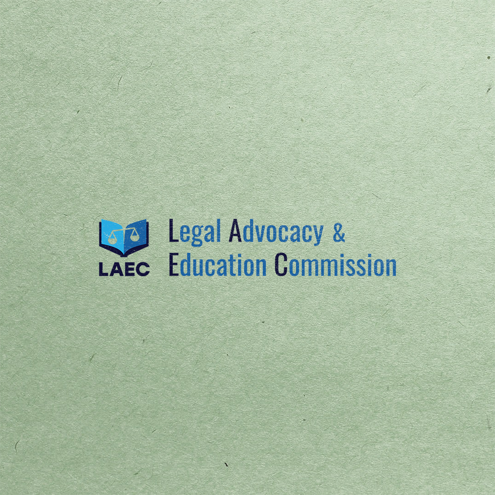
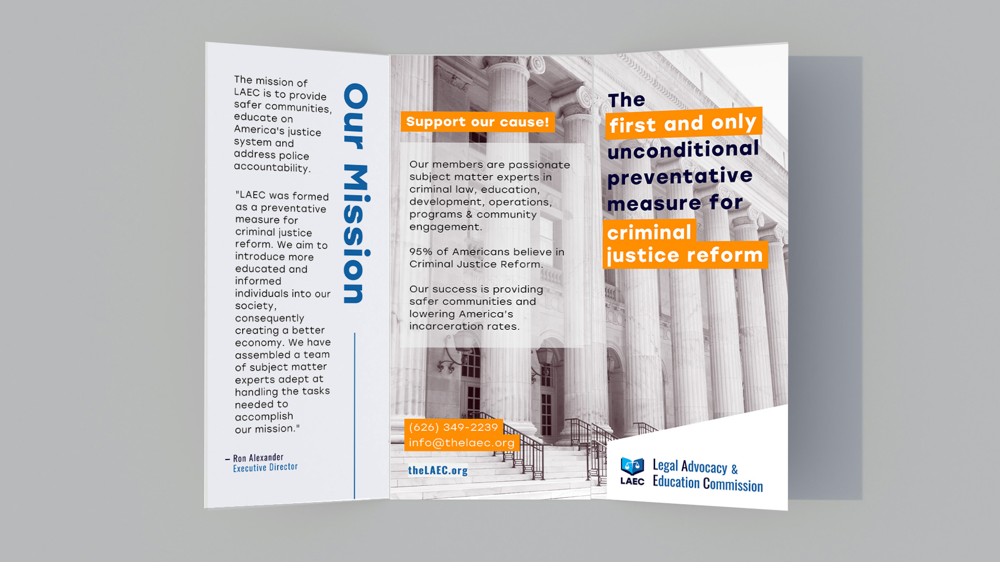
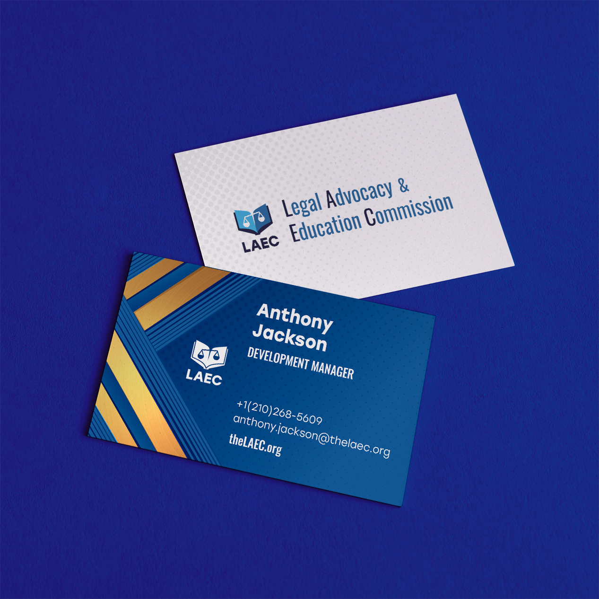
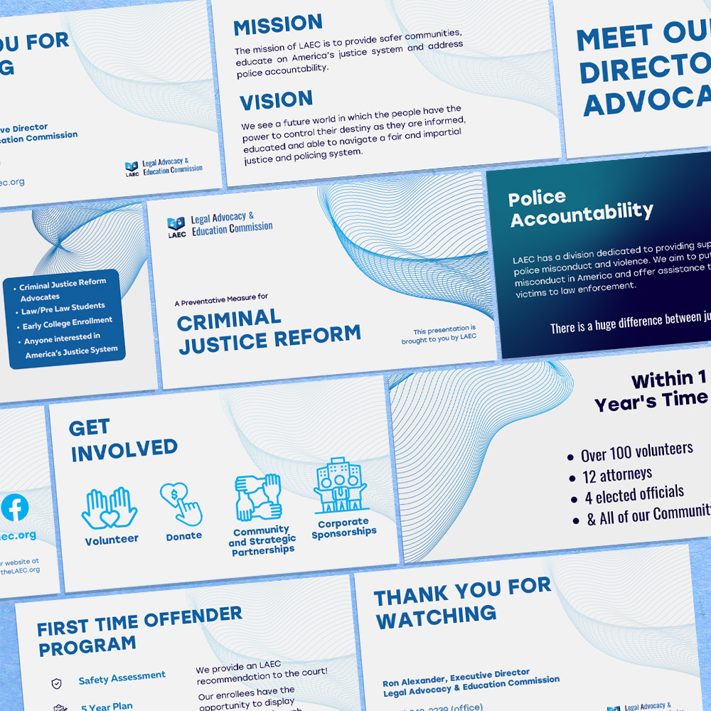
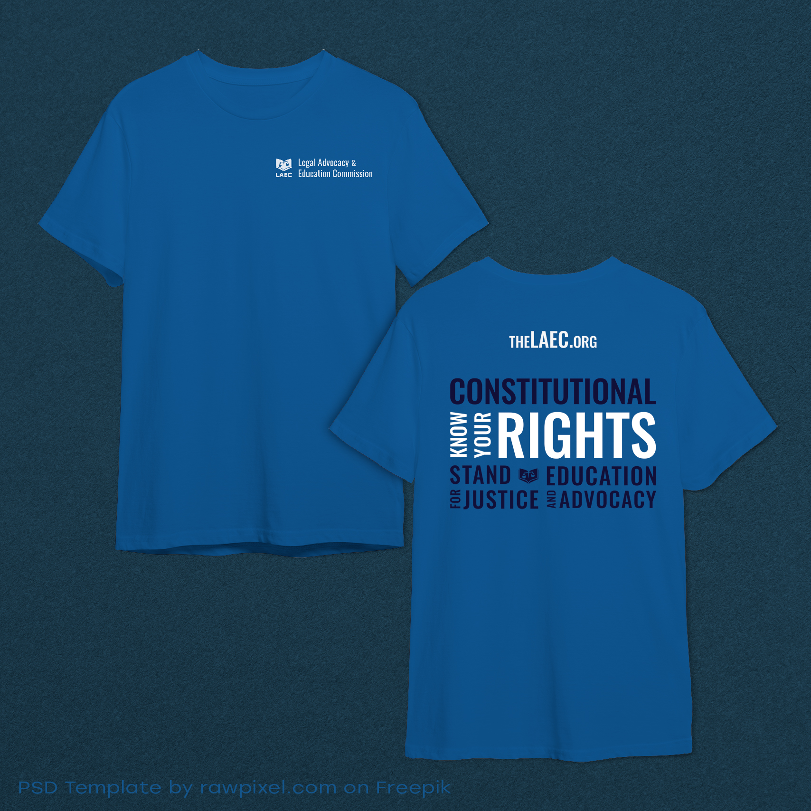
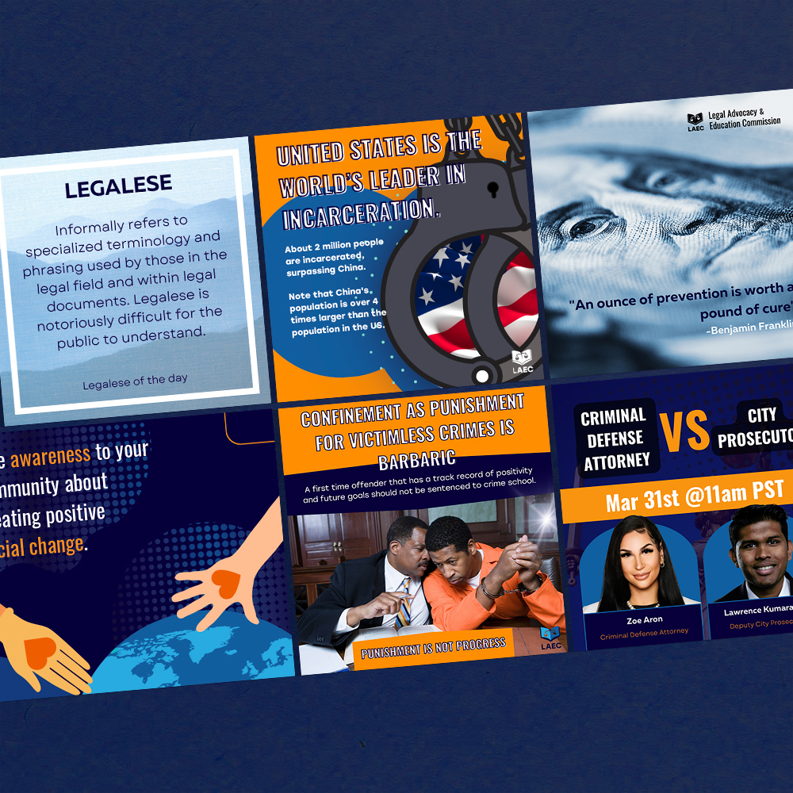

Legal Advocacy and Education Commission (LAEC)
LAEC is a non-profit focused on education, advocacy, and justice reforms. Between 2022–2023 I delivered a full brand refresh that included a new logo, professional business cards, trifold outreach brochures, a criminal-justice reform presentation, volunteer apparel, and a consistent social-media system.
Logo Redesign
September 2022 – Clean, authoritative mark built for education, advocacy and justice messaging.

Trifold Brochure – Community Outreach
October 2023 – Designed for active engagement during community events and outreach.

Business Card Redesign
October 2023 – Professionally branded cards meant to leave a reliable, trustworthy impression.

Criminal Justice Reform Presentation
April 2023 – Professional deck used for nonprofit overview and advocacy meetings.

Volunteer T-Shirt Design
April 2023 – Brand-aligned apparel available in multiple color and fabric options for volunteer activities.

Social Media System
2022–2023 – Consistent posts with engaging messages and motion graphics developed in collaboration with the social, admin and design teams.
